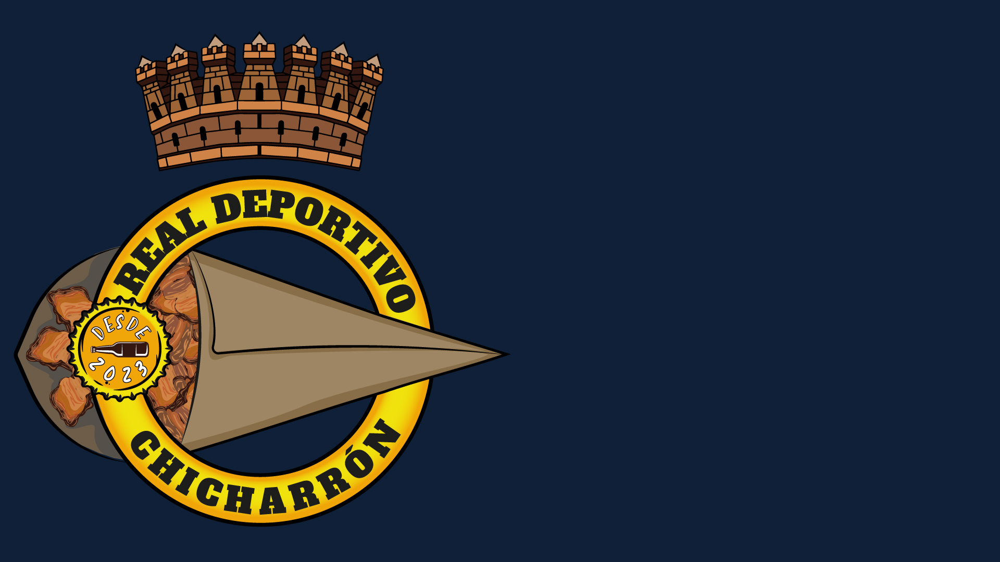
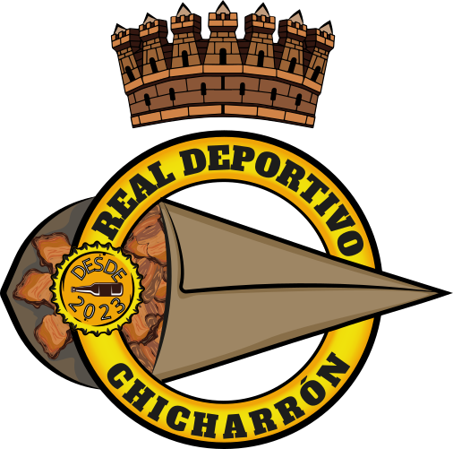
Real Deportivo
Chicharrón
Diseñar la identidad de un equipo que empezó entre cervezas y chicharrones.
El Real Deportivo Chicharrón nació una noche entre cervezas y chicharrones, cuando unos amigos que se habían conocido en la Escuela de Fútbol del Atco. Algabeño decidieron buscar su hueco en la Liga Chichos, una competición que lleva más de veinte años disputándose en la localidad. No buscaban gloria: buscaban un sitio donde revivir la pasión que los unía de chicos y un motivo más para reunirse cada viernes.
El reto era traducir todo eso a una identidad visual. No querían un escudo que hablara de trofeos, sino uno que representara su manera de vivir el fútbol: la tarde de partido y la cerveza de después, la que se levanta entre cánticos cuando se gana o ayuda a tragar la derrota cuando toca perder. Necesitaban una imagen familiar, cercana y con personalidad, capaz de funcionar tanto en una camiseta como en una celebración.
El punto de partida fue un homenaje cariñoso al fútbol de siempre. Tomé el lenguaje clásico de un club histórico —la corona, el círculo y la flecha— y lo reescribí por completo con el ADN del equipo: la flecha se viste de marrón chicharrón, los propios chicharrones se integran como emblema y un sello "Desde 2023" sella el origen de todo. Un escudo que cuenta su historia con solo mirarlo.
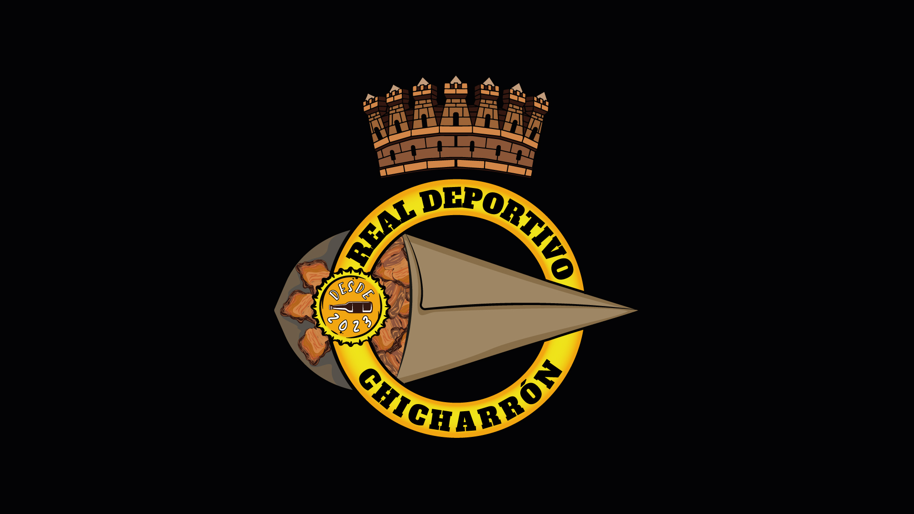
Logotipo principal — versión sobre fondo oscuro
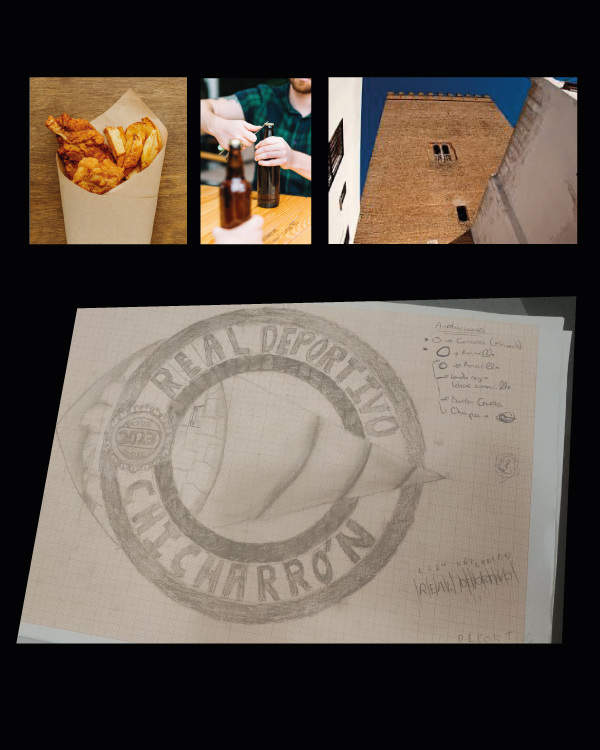
Para la elaboración del escudo, se ha tenido en cuenta algunos elementos visuales: La corona (representando la Torre de los Guzmanes, un monumento emblemático de la ciudad), el círculo (simbolizando la unidad y la comunidad del equipo), chapa de botellín (cerveza post-partido) y la flecha (que representa un cono de chicharrones).
Estos elementos se han reinterpretado para crear una identidad visual única que refleje la esencia del Real Deportivo Chicharrón.
"Todos los días sale el Sol, Chicharrón"
Guillermo Amieva · Presidente del Equipo
- Identidad
- Real Deportivo Chicharrón
- Año
- Disciplina
- Branding · Identidad Visual · RRSS · Serigrafía
- Herramientas
- Illustrator · Photoshop · Corel Draw
- Entregables
- Guía de marca · Equipaciones · Cartelería · Fotografías
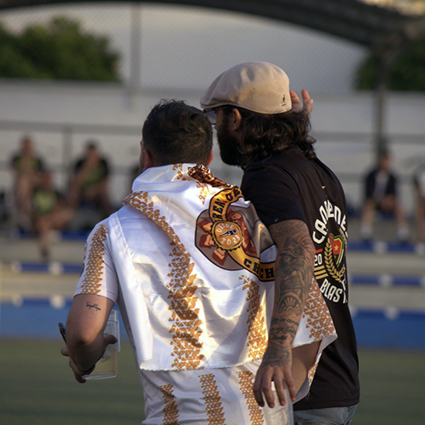
Bandera del RD Chicharrón
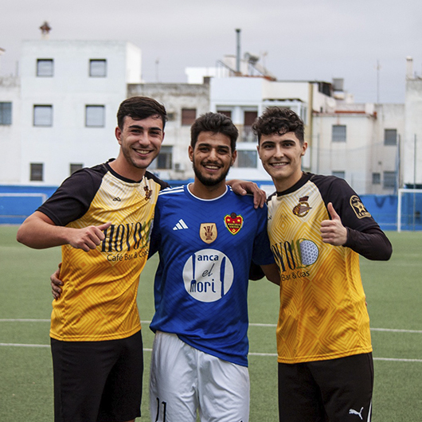
Fotografía · Liga Chichos
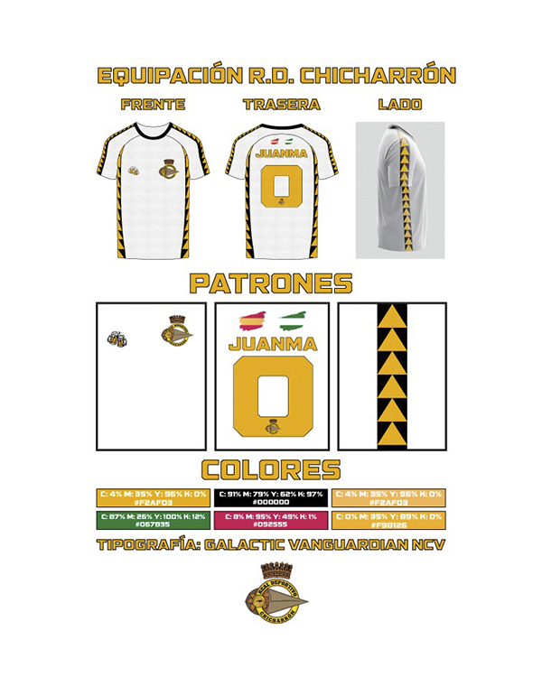
Para la aplicación de la marca, se han diseñado equipaciones completas que incluyen camisetas, pantalones y medias, utilizando la paleta de colores definida en la identidad visual.
Cada año se ofrecen diferentes propuestas de personalización. Una vez aprobado por todos los jugadores y aficionados, se procede a la producción mediante serigrafía, hablar con diferentes proveedores y gestionar los pedidos para que las equipaciones estén listas para la temporada.

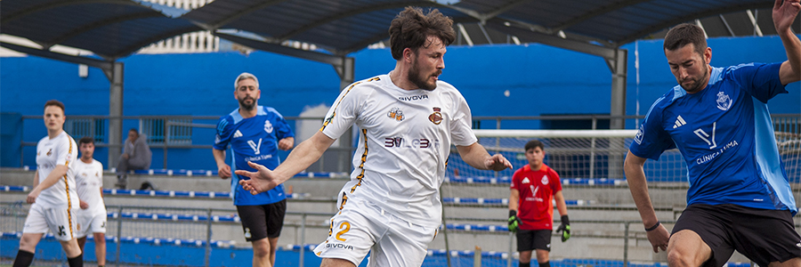
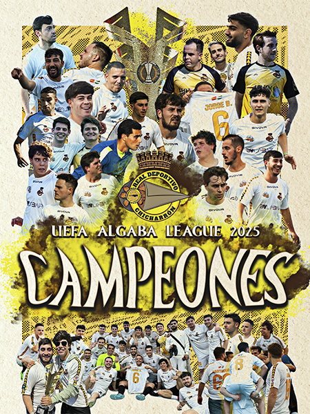
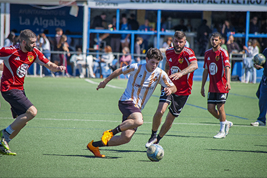
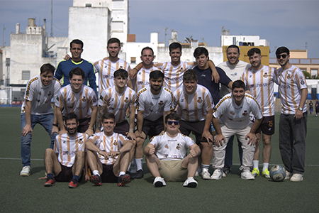
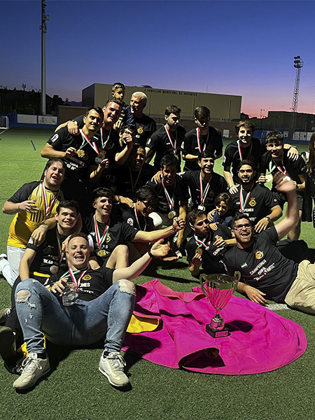
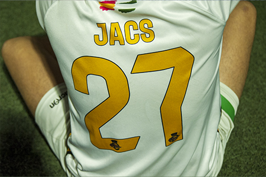
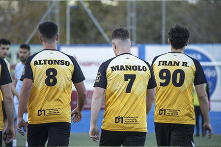
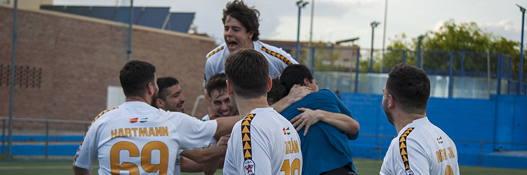
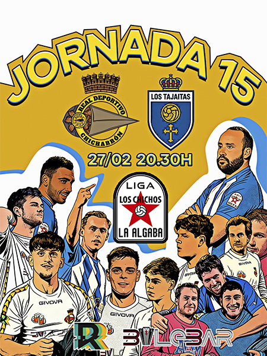
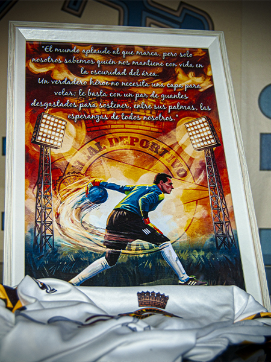
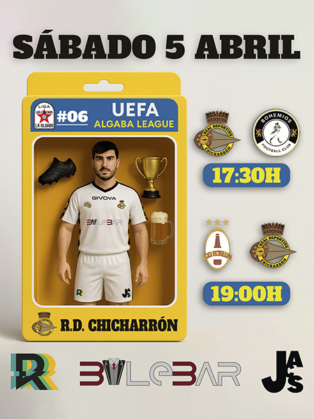